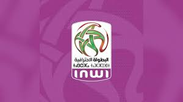
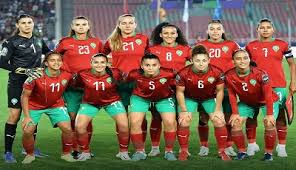
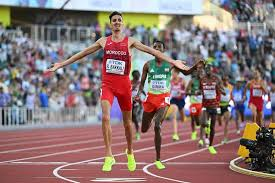

تقرير حول الدوري المغربي للمحترفين
شهد الدوري المغربي للمحترفين منافسة قوية بين الفرق هذا الموسم، حيث برزت عدة أندية بأداء مميز. واحتلت الصدارة فرق عريقة مثل الوداد والرجاء، في حين تمكنت أندية صاعدة من تحقيق نتائج إيجابية أربكت حسابات المنافسة.
من الناحية التنظيمية، عرف الموسم تحسناً ملحوظاً في البنية التحتية، خصوصاً مع تحديث الملاعب واعتماد تقنيات حديثة مثل تقنية حكم الفيديو المساعد (VAR).
الرياضة النسوية في المغرب
عرفت الرياضة النسوية تطوراً مهماً في السنوات الأخيرة، خاصة كرة القدم النسوية التي شهدت مشاركة المنتخب المغربي في محافل دولية. هذه الطفرة جاءت نتيجة استثمار الجامعة الملكية المغربية لكرة القدم في التكوين والدعم اللوجستي.
إضافة إلى ذلك، تحققت إنجازات بارزة في ألعاب القوى والرياضات الفردية مثل التنس والملاكمة، ما يعكس المكانة المتنامية للمرأة المغربية في المجال الرياضي.
ألعاب القوى المغربية: عودة للتألق
واصل العداؤون المغاربة تألقهم في المحافل الدولية، حيث تمكنوا من حصد ميداليات ذهبية وفضية في بطولات قارية وعالمية. وتبقى رياضة العدو الريفي والماراثون من أبرز التخصصات التي يبدع فيها المغرب تاريخياً.
ويرجع هذا النجاح إلى برامج التأهيل البدني وتطوير مراكز التدريب، إضافة إلى الدعم المستمر من المؤسسات الرياضية الوطنية.